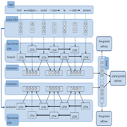
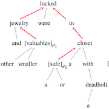
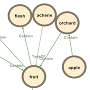

From Relation Extraction to Knowledge Graphs Paper
M.Sc. thesis, A system for extracting concepts from large corpora and built interactive knowledge graphs to provide invention developers with new insights.
Python, Tensorflow, Stanford Core NLP
This master's thesis addresses the problem of constructing a Knowledge Graph of concepts using Relation Extraction from texts. Concepts consist of short phrases composed of adjectives and nouns. The first part of the work focuses on developing different models (CNN, RNN, Bi-RCNN) capable of classifying the semantic relationship between two concepts (Relation Classification). We employ advanced methods such as convolutional neural networks and recurrent neural networks, significantly enhancing them through the use of counterexamples (negative sampling) and data augmentation.
The second part of this work centers around building a dataset that encompasses the types of relations Iprova is interested in. We train our best model on this dataset and apply it to concepts with sentences extracted from various corpora, thereby constructing representative Knowledge Graphs. Additionally, to increase the rate of true positives, we fine-tune confidence thresholds for each relation, minimizing false positives while achieving high precision and maximizing recall.
The relations predicted by our models are compared with state-of-the-art systems using the F1-Score on the SemEval-2010 Task 8 dataset, surpassing all other models in the literature. However, Knowledge Graphs constructed using the concept extraction system and these models cannot be utilized as-is for an automated system. One reason is that achieving a true positive rate of approximately 80% falls short of being considered a high precision system. Furthermore, we may encounter a mixture of semantic relations (e.g., homography) and hypothetical relations that may only hold true in specific cases (e.g., does a lung contain metastases?).
Finally, to the best of our knowledge, this kind of Knowledge Graph does not currently exist in the public domain. We present a tool for modeling domains of interest, providing related concepts along with their relationships, as well as a state-of-the-art model for the Relation Classification task of SemEval-2010 Task 8. Moreover, our proposed systems can be further enhanced by utilizing a pairwise ranking loss function to strengthen the capabilities of our models. Additionally, we can infer new relations by leveraging prior knowledge from Knowledge Graphs, thus increasing the number of relations available.
The thesis CONFIDENTIAL
This thesis is confidential and unfortunately, the non-disclosure agreement and the confidentiality contract don't allow me to talk about everything.
Bi-Recurrent Convolutional Neural Network
We have implemented advanced neural networks for the task of Relation Classification, combining deep convolutional and recurrent neural networks. Without utilizing data augmentation or negative sampling, we have already achieved state-of-the-art performance. Furthermore, by employing these techniques, we clearly outperform all other models documented in the literature.
Shortest dependency path in the dependency parse tree, word embeddings, part-of-speech tags, name entity categories and WordNet hypernyms
As the main feature, we used the shortest dependency path in the dependency parse tree between the two entities because it represents a trimmed version of the sentence, containing the most important information. Moreover, the relationship between the two entities is also directed, which is important for the Relation Classification task. We use special embeddings to improve performance and also incorporate additional features such as part-of-speech tags, named entity categories, as well as WordNet hypernyms.
Building representative Knowledge Graphs from different corpora
Once our Relation Classification model achieved state-of-the-art performance, we employed it on various corpora to extract relations between concepts. To enhance the rate of true positives during manual human evaluation, we optimized the confidence thresholds for each relation, aiming to minimize false positives while maintaining high precision and maximizing recall.
Miscellaneous
| Duration | ~1'000 hours |
| EPFL Supervisor | Dr. Jean-Cédric Chappelier |
| Iprova Supervisor | Bernard Maccari |